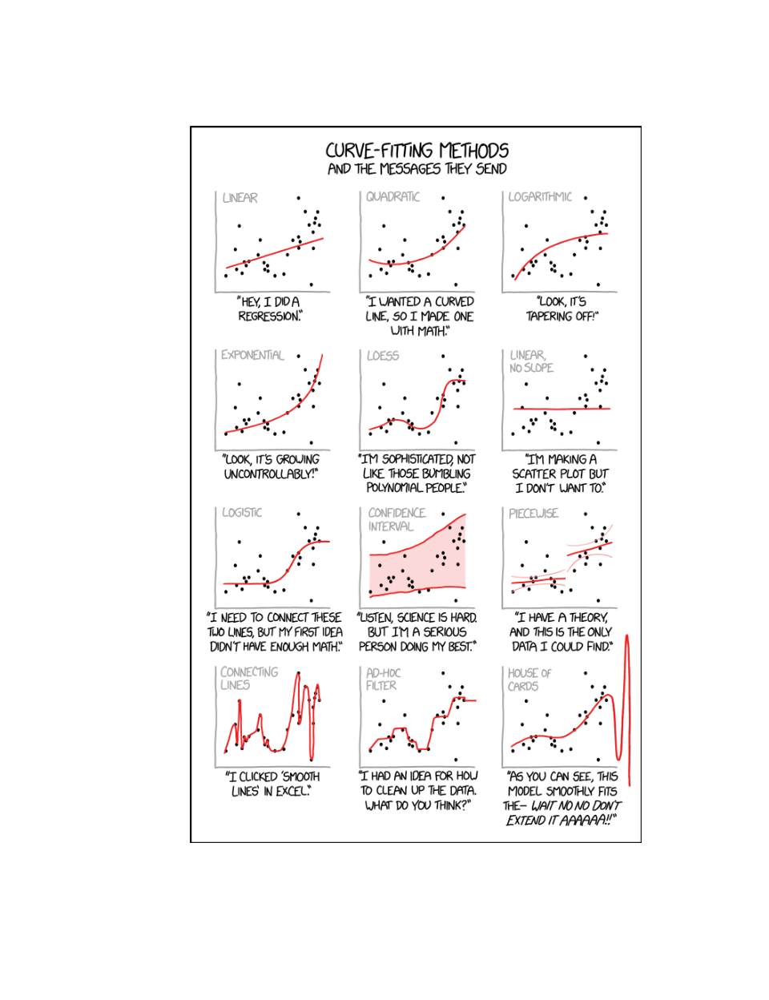
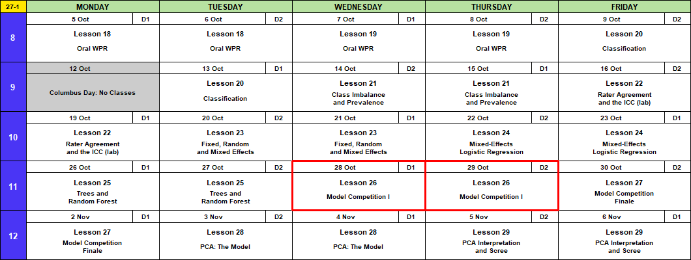
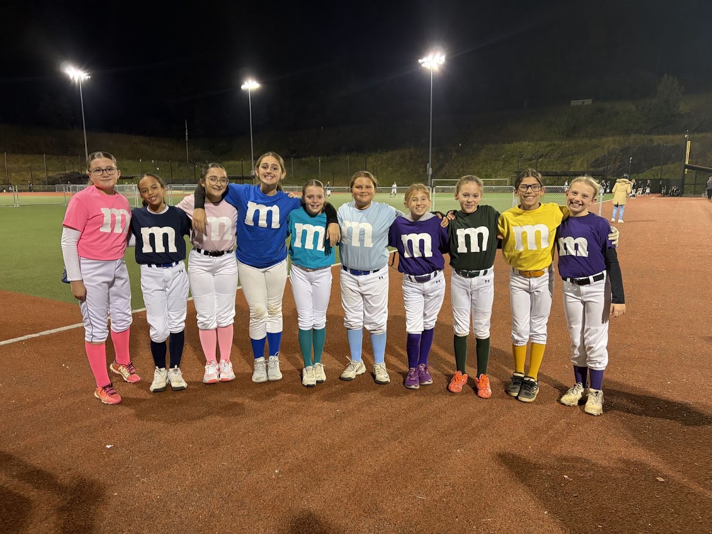
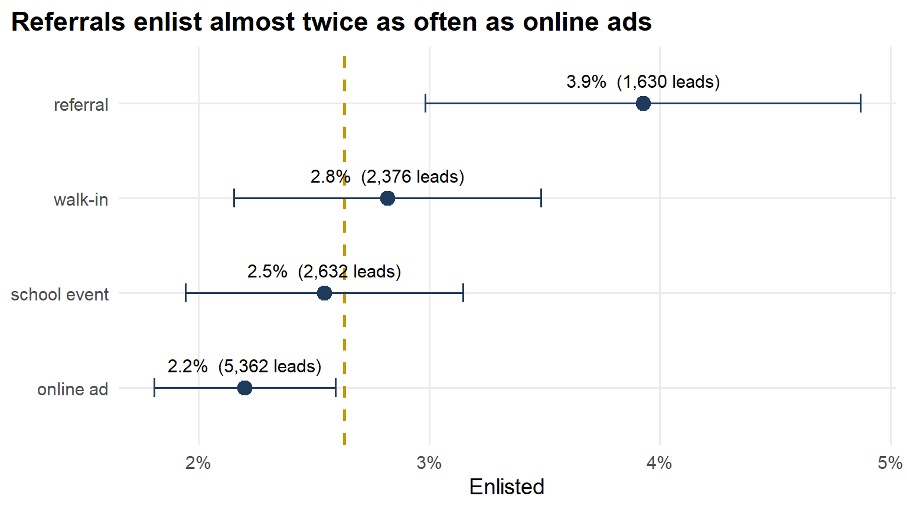
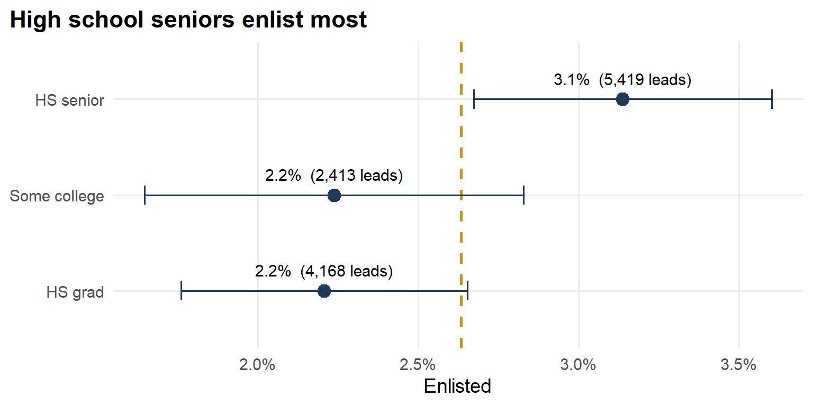
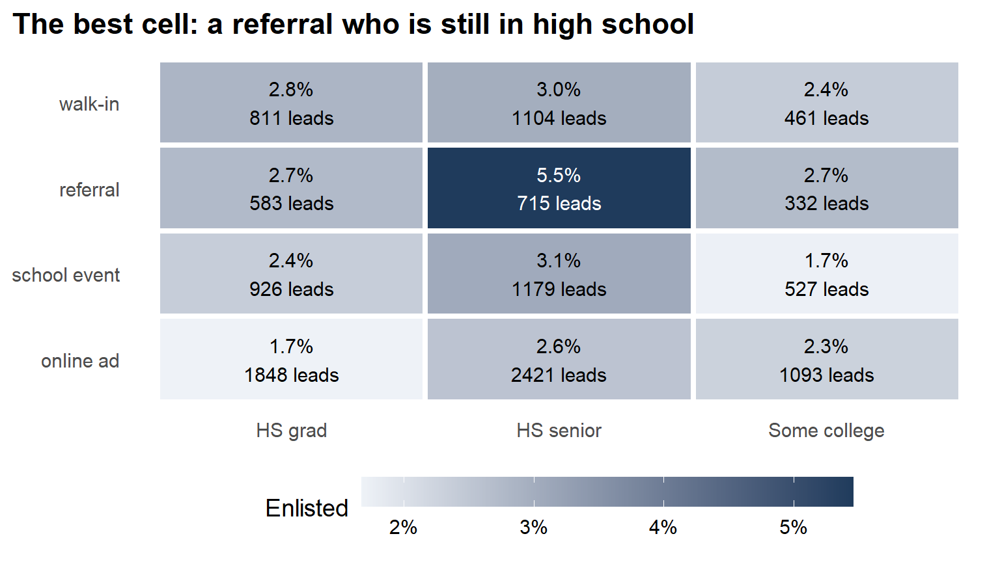
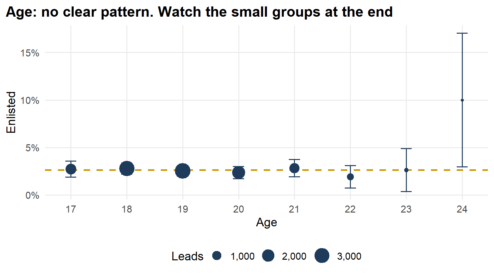
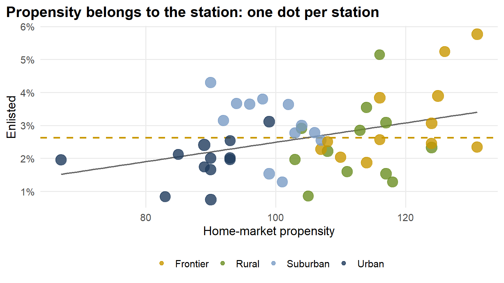
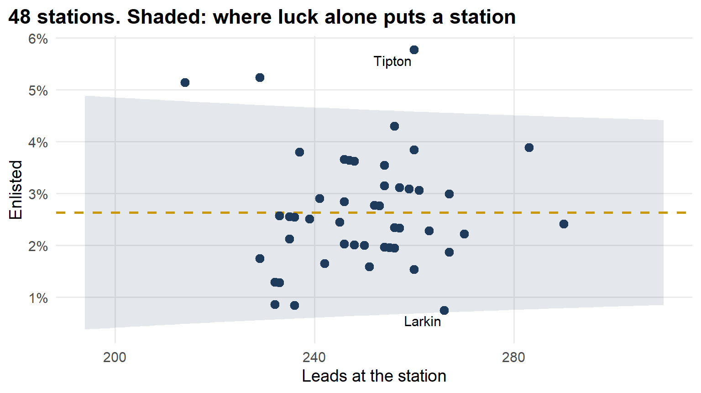
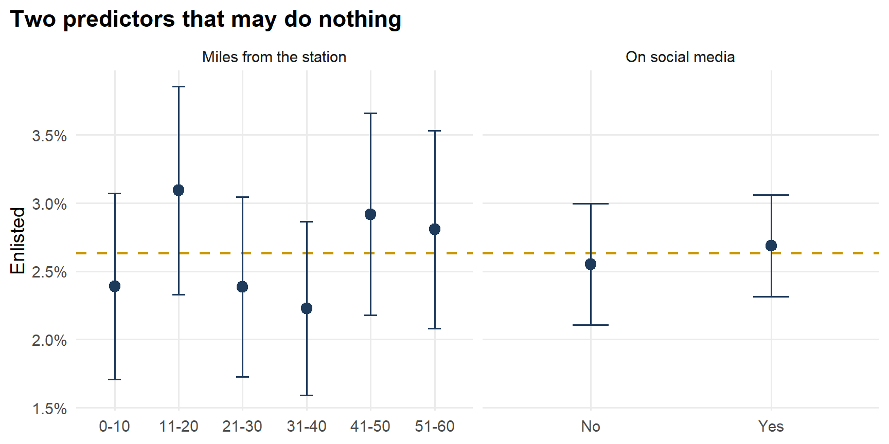

Lesson 26: Model Competition
Calendar

Admin
This Lesson
- Starter code (the same code as on this page)
- Memo 4 data: ma376_leads_m4.csv (12,000 leads, outcomes known) and ma376_leads_score.csv (3,900 incoming, no outcomes)
- Leaderboard: https://dustydell.tail280d22.ts.net:8443/ma376 or https://pmid-parent-liquid-nodes.trycloudflare.com/
- Your team code: from me, in class
Block 3 Quiz: Lesson 27
- In class at Lesson 27: BC2 Fri 30 Oct; A1, BC1 Mon 2 Nov
- It covers Lessons 20 to 23. If you can explain these in plain words, you’re ready:
- Why accuracy fools you when the outcome is rare
- What moving the threshold trades, and why 0.5 is a default, not a rule
- Sensitivity, specificity, precision, \(F_1\): what each one counts
- What kappa adds over percent agreement
- The benefit of a random effects model when the groups have small sample sizes
Memo 4
- Due Monday 2 November, every section. Hard copy by 1600, in class or at my office, TH239B.
- Tasking, data description
- Memo 4 is individual. Use your team’s model if you like; the argument is yours.
Coming Up
- Capstone Milestone 2: methodology and preliminary results. Due 2359 Friday 13 November, 60 points.
- Capstone final presentation. Lessons 37 and 38, 3 to 8 December, 100 points.
- I’m here through Lesson 29, 6 November.
TEE Slots
All TEE periods run 0730 to 1100. Find your name under your section.
NoteMA376 A1 14 (15 cadets)
| P1: Tue 15 Dec (8) | P4: Wed 16 Dec (7) |
|---|---|
| Anteen | Baron |
| Carroll | Fountain |
| Cole | Hardwick |
| Fonte | Rebolledo |
| Konopka | Shioutakon |
| Ploetz | Smith |
| Sun | Youmans |
| Toth |
NoteMA376 BC1 15 (14 cadets)
| P1: Tue 15 Dec (5) | P4: Wed 16 Dec (9) |
|---|---|
| Bode | Best |
| Lee | De La Torre |
| Ndiaye | Laub |
| O’Keefe | Loughman |
| Russell | Miranda |
| Nguyen | |
| Plummer | |
| Ward | |
| Weisenborn |
NoteMA376 BC2 16 (15 cadets)
| P1: Tue 15 Dec (4) | P4: Wed 16 Dec (11) |
|---|---|
| Gray | Applegate |
| Harris | Cannon |
| Van Kley | Ivey |
| Zhai | Johnson |
| Kendig | |
| Marino | |
| Myers | |
| Silverman | |
| Song | |
| Tullier | |
| Wittrock |
Break!

What We Did: Lessons 20 to 25
NoteReview: Judging a Classifier (Lesson 20)
| Truth positive | Truth negative | |
|---|---|---|
| Predicted positive | TP | FP, a false alarm |
| Predicted negative | FN, a miss | TN |
- Accuracy \(= \dfrac{TP + TN}{n}\)
- Sensitivity (recall) \(= \dfrac{TP}{TP + FN}\), specificity \(= \dfrac{TN}{TN + FP}\)
- Precision \(= \dfrac{TP}{TP + FP}\)
- \(F_1 = \dfrac{2\,TP}{2\,TP + FP + FN}\)
- Cut probabilities into labels at a threshold. \(0.5\) is a default, not a rule.
NoteReview: Class Imbalance and Prevalence (Lesson 21)
- Rare outcome: the null classifier scores \(1 - \text{prevalence}\), and a \(0.5\) threshold flags almost nothing.
- Three fixes: move the threshold, class weights (
glm(..., weights = w)), undersample. Each one moves the cutoff. None improves the model. - Sensitivity and specificity do not move with prevalence. Precision does.
- Report performance with the prevalence it was measured at.
NoteReview: Rater Agreement and the ICC (Lesson 22)
- Percent agreement \(p_o\). Chance agreement \(p_e = P(A)P(B) + P(A^c)P(B^c)\)
- Cohen’s kappa \(\kappa = \dfrac{p_o - p_e}{1 - p_e}\): agreement once you remove chance. Falls as prevalence moves to an extreme.
- \(\text{PABAK} = 2p_o - 1\): kappa with the prevalence set at half
- ICC \(= \dfrac{\hat\sigma^2_{\text{subject}}}{\hat\sigma^2_{\text{subject}} + \hat\sigma^2_{\text{rater}} + \hat\sigma^2_{\text{error}}}\), from a two-way ANOVA with raters as blocks
- Reliability is not validity: raters can agree and all be wrong.
NoteReview: Fixed, Random and Mixed Effects (Lesson 23)
- \(y_{ij} = \mu + u_j + \varepsilon_{ij}\), \(u_j \sim N(0, \sigma^2_u)\), \(\varepsilon_{ij} \sim N(0, \sigma^2)\)
lmer(y ~ 1 + (1 | group), data = d), thenfixef(),ranef(),coef()- \(\hat y_{ij} = \hat\mu + w_j(\bar y_j - \hat\mu)\), \(w_j = \dfrac{n_j}{n_j + \lambda}\), \(\lambda = \dfrac{\hat\sigma^2}{\hat\sigma^2_u}\): small groups shrink toward the average
- \(\text{ICC} = \dfrac{\hat\sigma^2_u}{\hat\sigma^2_u + \hat\sigma^2}\)
- Fixed: these levels are all you care about. Random: the levels are a sample of many.
NoteReview: Mixed-Effects Logistic Regression (Lesson 24)
- \(\log\dfrac{p_{ij}}{1 - p_{ij}} = \mu + u_j\), \(u_j \sim N(0, \sigma^2_u)\). No \(\varepsilon\): pass or fail is the noise.
glmer(y ~ x + (1 | group), family = binomial, data = d)predict(fit, newdata, type = "response", allow.new.levels = TRUE)glmwith a dummy per group: a group at 100% gets \(\hat\beta \to \infty\).glmershrinks it.- \(\text{ICC} = \dfrac{\hat\sigma^2_u}{\hat\sigma^2_u + \pi^2/3}\)
NoteReview: Trees and Random Forest (Lesson 25)
- A tree splits the data into boxes. Each split picks the predictor and cut that lowers Gini impurity the most.
- Gini for a box: \(G = 2p(1 - p)\). After a split, average the two boxes, weighted by size.
- A tree grown all the way memorizes the training data and does worse on new data. Limit it.
- Random forest: many trees, each on a bootstrap sample, each split choosing from
mtryrandom predictors. The forest votes. randomForest(y ~ ., data = train, ntree = , mtry = , nodesize = ); tune on out-of-bag \(F_1\).predict(fit, newdata, type = "prob")gives the share of trees that vote yes.- Variable importance says which predictors the forest leans on, not how.
What We’re Doing: Lesson 26
Today we build the models behind Memo 4 to Mr. Lemmes. Your memo needs a rule that scores every incoming lead. Your team builds and tests that rule today; the leaderboard tells you how well it ranks.
The Tasking
Mr. Lemmes, Memo 4:
- The battalion now takes in 3,900 leads a week.
- 205 recruiters can each open about 6 new leads a week: \(205 \times 6 = 1{,}230\) calls.
- The other 2,670 leads never get a call.
- “Build a rule that scores an incoming lead, and tell me where to draw the line.”
| Today, with your team | Memo 4, on your own | |
|---|---|---|
| The question | Which model and cut score best? | Where do we draw the line? |
| The answer | A model and its probabilities | A recommendation to Mr. Lemmes |
| Judged by | The leaderboard (not graded) | The memo rubric (graded) |
The Data
Install anything you don’t have, then load it.
pkgs <- c("tidyverse", "yardstick", "lme4", "randomForest", "ggrepel")
install.packages(setdiff(pkgs, rownames(installed.packages())))
library(tidyverse)
library(yardstick)
library(lme4)
library(randomForest)
library(ggrepel)Both Memo 4 files from Canvas go in the same folder as your script. In RStudio: Session > Set Working Directory > To Source File Location.
leads <- read_csv("ma376_leads_m4.csv", show_col_types = FALSE) |>
mutate(across(where(is.character), factor), enlisted = factor(enlisted))
incoming <- read_csv("ma376_leads_score.csv", show_col_types = FALSE) |>
mutate(across(where(is.character), factor))
head(leads) |> print(width = Inf)# A tibble: 6 × 9
station market_type propensity lead_source education age distance_miles social_media enlisted
<fct> <fct> <dbl> <fct> <fct> <dbl> <dbl> <fct> <fct>
1 Marion Frontier 107 online ad HS grad 19 11 Yes 0
2 Ashford Urban 85 online ad HS grad 19 14 No 0
3 Alton Rural 117 school event HS grad 20 14 Yes 0
4 Jasper Urban 89 walk-in HS grad 21 50 Yes 0
5 Lamont Rural 111 referral Some college 19 19 No 0
6 Redmond Suburban 106 online ad HS senior 19 27 Yes 0 leads |> count(enlisted) |> mutate(share = n / sum(n))# A tibble: 2 × 3
enlisted n share
<fct> <int> <dbl>
1 0 11684 0.974
2 1 316 0.0263- Worked leads: 12,000, outcome known. 2.6% enlisted.
- Incoming: 3,900, no
enlistedcolumn. You predict those. lead_idties your prediction to a lead. Never drop it or sort it away.
Exploratory Data Analysis
Every plot: the share of leads that enlisted. Dashed line: the overall 2.6%. Bars: 95% intervals.
Code
leads |>
group_by(lead_source) |>
summarise(n = n(), rate = mean(enlisted == "1")) |>
mutate(se = sqrt(rate * (1 - rate) / n), lead_source = fct_reorder(lead_source, rate)) |>
ggplot(aes(x = rate, y = lead_source)) +
geom_vline(xintercept = base, linetype = "dashed", color = gold, linewidth = 0.9) +
geom_errorbarh(aes(xmin = rate - 1.96 * se, xmax = rate + 1.96 * se), height = 0.2, color = navy) +
geom_point(size = 4, color = navy) +
geom_text(aes(label = paste0(scales::percent(rate, 0.1), " (", scales::comma(n), " leads)")),
vjust = -1.2, size = 4) +
scale_x_continuous(labels = scales::percent) +
labs(title = "Referrals enlist almost twice as often as online ads", x = "Enlisted", y = NULL)
Code
leads |>
group_by(education) |>
summarise(n = n(), rate = mean(enlisted == "1")) |>
mutate(se = sqrt(rate * (1 - rate) / n), education = fct_reorder(education, rate)) |>
ggplot(aes(x = rate, y = education)) +
geom_vline(xintercept = base, linetype = "dashed", color = gold, linewidth = 0.9) +
geom_errorbarh(aes(xmin = rate - 1.96 * se, xmax = rate + 1.96 * se), height = 0.2, color = navy) +
geom_point(size = 4, color = navy) +
geom_text(aes(label = paste0(scales::percent(rate, 0.1), " (", scales::comma(n), " leads)")),
vjust = -1.2, size = 4) +
scale_x_continuous(labels = scales::percent) +
labs(title = "High school seniors enlist most", x = "Enlisted", y = NULL)
Code
leads |>
group_by(lead_source, education) |>
summarise(n = n(), rate = mean(enlisted == "1"), .groups = "drop") |>
ggplot(aes(x = education, y = fct_reorder(lead_source, rate), fill = rate)) +
geom_tile(color = "white", linewidth = 1.5) +
geom_text(aes(label = paste0(scales::percent(rate, 0.1), "\n", n, " leads"),
color = rate > 0.04), size = 4, show.legend = FALSE) +
scale_fill_gradient(low = "#eef2f7", high = navy, labels = scales::percent) +
scale_color_manual(values = c("black", "white")) +
labs(title = "The best cell: a referral who is still in high school",
x = NULL, y = NULL, fill = "Enlisted") +
theme(panel.grid = element_blank(), legend.key.width = unit(2, "cm"))
Code
leads |>
group_by(age) |>
summarise(n = n(), rate = mean(enlisted == "1")) |>
mutate(se = sqrt(rate * (1 - rate) / n)) |>
ggplot(aes(x = age, y = rate)) +
overall +
geom_errorbar(aes(ymin = pmax(rate - 1.96 * se, 0), ymax = rate + 1.96 * se), width = 0.2, color = navy) +
geom_point(aes(size = n), color = navy) +
scale_y_continuous(labels = scales::percent) +
scale_x_continuous(breaks = 17:24) +
scale_size_area(max_size = 8, labels = scales::comma) +
labs(title = "Age: no clear pattern. Watch the small groups at the end",
x = "Age", y = "Enlisted", size = "Leads")
Code
leads |>
group_by(station, market_type, propensity) |>
summarise(n = n(), rate = mean(enlisted == "1"), .groups = "drop") |>
ggplot(aes(x = propensity, y = rate)) +
overall +
geom_smooth(method = "lm", se = FALSE, color = "gray40", linewidth = 0.8) +
geom_point(aes(size = n, color = market_type), alpha = 0.8) +
scale_y_continuous(labels = scales::percent) +
scale_color_manual(values = c(Frontier = gold, Rural = "#6b8e23", Suburban = "#7a9cc6", Urban = navy)) +
scale_size_area(max_size = 6, guide = "none") +
labs(title = "Propensity belongs to the station: one dot per station",
x = "Home-market propensity", y = "Enlisted", color = NULL)
Code
stations <- leads |>
group_by(station) |>
summarise(n = n(), rate = mean(enlisted == "1"))
funnel <- tibble(n = seq(min(stations$n) - 20, max(stations$n) + 20)) |>
mutate(lo = base - 1.96 * sqrt(base * (1 - base) / n), hi = base + 1.96 * sqrt(base * (1 - base) / n))
ggplot() +
geom_ribbon(data = funnel, aes(x = n, ymin = pmax(lo, 0), ymax = hi), fill = navy, alpha = 0.12) +
geom_hline(yintercept = base, linetype = "dashed", color = gold, linewidth = 0.9) +
geom_point(data = stations, aes(x = n, y = rate), color = navy, size = 3) +
ggrepel::geom_text_repel(data = stations |> filter(rate == max(rate) | rate == min(rate)),
aes(x = n, y = rate, label = station), size = 4) +
scale_y_continuous(labels = scales::percent) +
labs(title = paste(n_station, "stations. Shaded: where luck alone puts a station"),
x = "Leads at the station", y = "Enlisted")
Code
bind_rows(
leads |> mutate(group = cut(distance_miles, c(0, 10, 20, 30, 40, 50, 60), labels = c("0-10", "11-20", "21-30", "31-40", "41-50", "51-60")),
panel = "Miles from the station"),
leads |> mutate(group = factor(social_media), panel = "On social media")
) |>
group_by(panel, group) |>
summarise(n = n(), rate = mean(enlisted == "1"), .groups = "drop") |>
mutate(se = sqrt(rate * (1 - rate) / n)) |>
ggplot(aes(x = group, y = rate)) +
overall +
geom_errorbar(aes(ymin = rate - 1.96 * se, ymax = rate + 1.96 * se), width = 0.2, color = navy) +
geom_point(size = 3.5, color = navy) +
facet_wrap(~ panel, scales = "free_x") +
scale_y_continuous(labels = scales::percent) +
labs(title = "Two predictors that may do nothing", x = NULL, y = "Enlisted")
The Competition
Six model types. Your team can upload one of each. Use your best model for Memo 4.
| Model type | From | Your cut | |
|---|---|---|---|
| 1 | Logistic regression | Lessons 9, 20 | 0.5 |
| 2 | Logistic, your cut (Fix 1) | Lesson 21 | Yours |
| 3 | Logistic, class weights (Fix 2) | Lesson 21 | Yours |
| 4 | Logistic, undersampled (Fix 3) | Lesson 21 | Yours |
| 5 | Mixed-effects logistic | Lesson 24 | Yours |
| 6 | Random forest | Lesson 25 | Yours |
- In your teams. One team code per team.
- Upload: a CSV with three columns:
lead_id,probability, andcall(1 = a recruiter calls this lead, 0 = not). Exactly 3,900 rows, each lead once. Pick the model type when you upload at the leaderboard. - Score: \(F_1\) on your
callcolumn. Highest \(F_1\) wins each model type. - The board shows every team’s latest upload of every type. Filter by model type. Sort by any column: \(F_1\), accuracy, sensitivity, specificity, precision, calls, enlistees caught.
- Live board: scores a hidden 30% of the incoming leads. Final board: scores the other 70%, revealed at Lesson 27.
- Five uploads per model type per day.
- Ties: the earlier upload wins.
- Data: Memo 4 files only. No outside data. Talk methods with other teams; don’t share code.
- The board closes Thursday 29 October at 2359, every section.
- Not graded. Bragging rights.
How You’re Scored
Your call column against what happened:
| Enlisted | Did not enlist | |
|---|---|---|
| Called | TP, caught | FP, a call that went nowhere |
| Not called | FN, left unworked | TN |
- \(F_1 = \dfrac{2\,TP}{2\,TP + FP + FN}\): the score.
- Accuracy is on the board too. Sort by it and look at what lands on top.
- Calls \(= TP + FP\). The recruiters can make 1,230. The board shows yours.
- Enlistees caught \(= TP\).
Starter Code: Model Type 1
Logistic regression, cut at 0.5. This is the baseline. Beat it.
1. Split the Worked Leads
The board only scores incoming leads, and you get five uploads a day. Check your models here first.
set.seed(376)
leads <- leads |> mutate(set = if_else(runif(n()) < 0.7, "train", "test"))
train <- leads |> filter(set == "train") |> select(-set)
test <- leads |> filter(set == "test") |> select(-set)2. Fit It
station is left out: 48 towns would be 47 dummies. Lesson 24 has a better idea.
fit_logit <- glm(enlisted ~ market_type + propensity + lead_source + education + age +
distance_miles + social_media,
family = binomial, data = train)
summary(fit_logit)
Call:
glm(formula = enlisted ~ market_type + propensity + lead_source +
education + age + distance_miles + social_media, family = binomial,
data = train)
Coefficients:
Estimate Std. Error z value Pr(>|z|)
(Intercept) -5.693738 1.474972 -3.860 0.000113 ***
market_typeRural -0.249938 0.200062 -1.249 0.211554
market_typeSuburban 0.170078 0.265042 0.642 0.521067
market_typeUrban -0.087425 0.357716 -0.244 0.806922
propensity 0.009914 0.009747 1.017 0.309111
lead_sourcereferral 0.586756 0.189268 3.100 0.001934 **
lead_sourceschool event 0.241696 0.177601 1.361 0.173548
lead_sourcewalk-in 0.347640 0.176793 1.966 0.049257 *
educationHS senior 0.430638 0.153911 2.798 0.005142 **
educationSome college 0.117872 0.200103 0.589 0.555823
age 0.028375 0.044970 0.631 0.528064
distance_miles 0.002397 0.003898 0.615 0.538654
social_mediaYes 0.104913 0.136557 0.768 0.442326
---
Signif. codes: 0 '***' 0.001 '**' 0.01 '*' 0.05 '.' 0.1 ' ' 1
(Dispersion parameter for binomial family taken to be 1)
Null deviance: 2149.8 on 8372 degrees of freedom
Residual deviance: 2121.9 on 8360 degrees of freedom
AIC: 2147.9
Number of Fisher Scoring iterations: 63. Predict, and Cut at 0.5
results_logit <- test |>
mutate(prob = predict(fit_logit, test, type = "response"),
call = factor(if_else(prob > 0.5, 1, 0), levels = c(0, 1)))4. Score It Like the Board
conf_mat(results_logit, truth = enlisted, estimate = call) Truth
Prediction 0 1
0 3547 80
1 0 0lead_metrics <- metric_set(f_meas, accuracy, sensitivity, specificity, precision)
results_logit |>
lead_metrics(truth = enlisted, estimate = call, event_level = "second")# A tibble: 5 × 3
.metric .estimator .estimate
<chr> <chr> <dbl>
1 f_meas binary NA
2 accuracy binary 0.978
3 sensitivity binary 0
4 specificity binary 1
5 precision binary NA - \(F_1\) is
NA: no calls, so precision is \(0/0\). The board scores it 0. - 97% accurate, and not one enlistee caught.
5. Refit on All 12,000 and Write the Upload
fit_final <- glm(enlisted ~ market_type + propensity + lead_source + education + age +
distance_miles + social_media,
family = binomial, data = leads)
upload <- incoming |>
mutate(probability = predict(fit_final, incoming, type = "response"),
call = if_else(probability > 0.5, 1, 0)) |>
select(lead_id, probability, call)
head(upload)# A tibble: 6 × 3
lead_id probability call
<dbl> <dbl> <dbl>
1 1 0.0245 0
2 2 0.0272 0
3 3 0.0237 0
4 4 0.0246 0
5 5 0.0126 0
6 6 0.0171 0nrow(upload)[1] 3900write_csv(upload, "team_XX_type1.csv")Put your team code in place of XX. Upload it as model type 1. That’s your team on the board.
Your Turn: Model Types 2 to 6
Each type runs start to finish, the same five steps as type 1: fit on train, predict test, score it, refit on all 12,000, predict the incoming leads and write the upload. Fill in the blanks, run it, upload it, then make it better.
Type 2: Logistic, Your Cut (Fix 1)
Pick your predictors. Tune the cut on \(F_1\) by five-fold cross-validation on train, as in Lesson 21. Never tune on test.
cuts <- seq(0.01, 0.10, by = 0.005) # the cuts to try
set.seed(11)
fold <- sample(rep(1:5, length.out = nrow(train))) # each training lead gets a fold
p_cv <- numeric(nrow(train))
for (k in 1:5) {
f <- glm(enlisted ~ ___,
family = binomial, data = train[fold != k, ]) # fit on four folds
p_cv[fold == k] <- predict(f, train[fold == k, ], type = "response") # predict the fifth
}
f1 <- sapply(cuts, function(t) {
call <- p_cv > t
2 * sum(call & train$enlisted == "1") / (sum(call) + sum(train$enlisted == "1"))
})
best_cut <- cuts[which.max(f1)]
best_cutfit_cut <- glm(enlisted ~ ___,
family = binomial, data = train)
results_cut <- test |>
mutate(prob = predict(fit_cut, test, type = "response"),
call = factor(if_else(prob > best_cut, 1, 0), levels = c(0, 1)))
results_cut |> conf_mat(truth = enlisted, estimate = call)
results_cut |> lead_metrics(truth = enlisted, estimate = call, event_level = "second")fit_cut_final <- glm(enlisted ~ ___,
family = binomial, data = leads)
upload <- incoming |>
mutate(probability = predict(fit_cut_final, incoming, type = "response"),
call = if_else(probability > best_cut, 1, 0)) |>
select(lead_id, probability, call)
sum(upload$call)
write_csv(upload, "team_XX_type2.csv")- The cut is a choice. Best \(F_1\) is one reason. 1,230 calls is another.
Type 3: Logistic, Class Weights (Fix 2)
Each training enlistee counts as \(n_0 / n_1\) leads, as in Lesson 21. Cut at 0.5.
w <- ifelse(train$enlisted == "1", sum(train$enlisted == "0") / sum(train$enlisted == "1"), 1)
fit_weighted <- glm(enlisted ~ ___,
family = binomial, data = train, weights = w)
# R warns about "non-integer #successes" because the weights aren't whole numbers. We mean it.
results_weighted <- test |>
mutate(prob = predict(fit_weighted, test, type = "response"),
call = factor(if_else(prob > 0.5, 1, 0), levels = c(0, 1)))
results_weighted |> conf_mat(truth = enlisted, estimate = call)
results_weighted |> lead_metrics(truth = enlisted, estimate = call, event_level = "second")w_all <- ifelse(leads$enlisted == "1", sum(leads$enlisted == "0") / sum(leads$enlisted == "1"), 1)
fit_weighted_final <- glm(enlisted ~ ___,
family = binomial, data = leads, weights = w_all)
upload <- incoming |>
mutate(probability = predict(fit_weighted_final, incoming, type = "response"),
call = if_else(probability > 0.5, 1, 0)) |>
select(lead_id, probability, call)
sum(upload$call)
write_csv(upload, "team_XX_type3.csv")- How many does it call at 0.5? Compare to 1,230.
Type 4: Logistic, Undersampled (Fix 3)
In train, keep every enlistee and the same number of leads that didn’t enlist, drawn at random, as in Lesson 21. Cut at 0.5.
set.seed(376)
keep <- c(which(train$enlisted == "1"), sample(which(train$enlisted == "0"), sum(train$enlisted == "1")))
fit_under <- glm(enlisted ~ ___,
family = binomial, data = train[keep, ])
results_under <- test |>
mutate(prob = predict(fit_under, test, type = "response"),
call = factor(if_else(prob > 0.5, 1, 0), levels = c(0, 1)))
results_under |> conf_mat(truth = enlisted, estimate = call)
results_under |> lead_metrics(truth = enlisted, estimate = call, event_level = "second")set.seed(376)
keep_all <- c(which(leads$enlisted == "1"), sample(which(leads$enlisted == "0"), sum(leads$enlisted == "1")))
fit_under_final <- glm(enlisted ~ ___,
family = binomial, data = leads[keep_all, ])
upload <- incoming |>
mutate(probability = predict(fit_under_final, incoming, type = "response"),
call = if_else(probability > 0.5, 1, 0)) |>
select(lead_id, probability, call)
sum(upload$call)
write_csv(upload, "team_XX_type4.csv")Type 5: Mixed-Effects Logistic (Lesson 24)
Your predictors plus a random intercept for each station, fit with glmer as in Lesson 24. A 0.5 cut calls nobody again, so use type 2’s cut.
fit_glmer <- glmer(enlisted ~ ___ + (1 | station),
family = binomial, data = train)
summary(fit_glmer)results_glmer <- test |>
mutate(prob = predict(fit_glmer, test, type = "response", allow.new.levels = TRUE),
call = factor(if_else(prob > best_cut, 1, 0), levels = c(0, 1)))
results_glmer |> conf_mat(truth = enlisted, estimate = call)
results_glmer |> lead_metrics(truth = enlisted, estimate = call, event_level = "second")fit_glmer_final <- glmer(enlisted ~ ___ + (1 | station),
family = binomial, data = leads)
upload <- incoming |>
mutate(probability = predict(fit_glmer_final, incoming, type = "response", allow.new.levels = TRUE),
call = if_else(probability > best_cut, 1, 0)) |>
select(lead_id, probability, call)
sum(upload$call)
write_csv(upload, "team_XX_type5.csv")- Look at the station variance. What is it telling you?
- Its own cut: run type 2’s loop with this
glmerin place ofglm. Fiveglmerfits take a minute or two. - If
glmerwarns about converging or rescaling, that’s the size ofpropensityanddistance_miles. Tryscale(). allow.new.levels = TRUE: a station with no worked leads gets the average station.
Type 6: Random Forest (Lesson 25)
Fit the forest as in Lesson 25. A majority vote calls nobody here, so cut the share of trees that vote “enlisted.” Tune the cut on the out-of-bag votes, never on test.
set.seed(376)
fit_rf <- randomForest(enlisted ~ ___,
data = train,
ntree = ___, # how many trees
mtry = ___, # predictors each split may look at
nodesize = ___) # smallest box a tree can make
fit_rfp_oob <- fit_rf$votes[, "1"] # each training lead, voted on only by trees that never saw it
f1_rf <- sapply(cuts, function(t) {
call <- p_oob > t
2 * sum(call & train$enlisted == "1") / (sum(call) + sum(train$enlisted == "1"))
})
best_rf <- cuts[which.max(f1_rf)]
best_rf
results_rf <- test |>
mutate(prob = predict(fit_rf, test, type = "prob")[, "1"],
call = factor(if_else(prob > best_rf, 1, 0), levels = c(0, 1)))
results_rf |> conf_mat(truth = enlisted, estimate = call)
results_rf |> lead_metrics(truth = enlisted, estimate = call, event_level = "second")set.seed(376)
fit_rf_final <- randomForest(enlisted ~ ___,
data = leads, ntree = ___, mtry = ___, nodesize = ___)
upload <- incoming |>
mutate(probability = predict(fit_rf_final, incoming, type = "prob")[, "1"],
call = if_else(probability > best_rf, 1, 0)) |>
select(lead_id, probability, call)
sum(upload$call)
write_csv(upload, "team_XX_type6.csv")- Tune
ntree,mtry,nodesizewith Lesson 25’s grid. Check the winner ontestbefore you upload: with this few enlistees, the best OOB score can be luck.
From the Board to the Memo
The board answers one question: which model and cut score best? Memo 4 asks the rest. Your memo should answer:
- How many future Soldiers are below your line each week?
- What would it take to reach them?
- Is 6 new leads per recruiter the right capacity? What happens to your answer at 5, or 8?
- Your model trained on leads from before the surge. Should Mr. Lemmes trust it on the leads after?
Before Lesson 27
- The board closes Thursday 29 October at 2359.
- Block 3 quiz, in class at Lesson 27 (BC2 Fri 30 Oct; A1, BC1 Mon 2 Nov). Lessons 20 to 23; the list is in the Admin above.
- Lesson 27: the final board, and what the winners did.
- Memo 4 due Monday 2 November, hard copy by 1600.